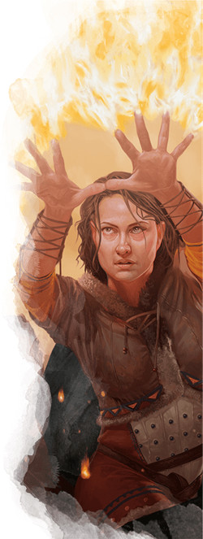

Le magicien D&D 5 pour les nuls
Vous êtes un magicien, un étudiant des arts ésotériques. Quand vous ne partez pas à l'aventure, vos journées sont consacrées à l'étude de livres remplis de secrets magiques et à la lecture d'anciens manuscrits qui vous aideront à découvrir les mystères de l'univers. Si vous n'avez jamais joué à D&D auparavant, sachez que le magicien est un personnage complexe à jouer. Vos nombreux sorts vous permettent d'accomplir des exploits incroyables aussi bien en et hors combat, mais vous devrez consacrer un peu de temps pour apprendre à jouer votre personnage et gérer ses innombrables sorts.
Si le plus important à D&D est de jouer votre personnage d'une manière qui vous amuse et amuse les autres joueurs, il y a tout de même certaines bases que vous devriez connaître pour jouer un magicien de manière efficace. Tout comme le MD doit connaître les règles du jeu pour pouvoir les adapter, vous devriez connaître les tactiques de base de votre classe afin de vous amuser à jouer les caprice de votre personnage tout en soutenant votre groupe. Cette aide de jeu va donc vous présenter les bases du magicien sur les 5 premiers niveaux.
Créer votre magicien
Sans aller jusqu'à parler d'optimisation, la première étape pour bien jouer votre classe est de construire votre personnage efficacement.
- Choisissez votre race. N'importe laquelle peut faire un bon magicien, mais préférez celles qui améliorent votre valeur d'Intelligence. L'intelligence est votre caractéristique la plus importante car c'est elle qui détermine la puissance de vos sorts. Les gnomes sont des magiciens particulièrement puissants en raison de leur bonus racial de +2 en Intelligence. Les humains, les hauts-elfes (leur capacité Entraînement aux armes elfiques vous permet de maîtriser certaines armes de guerre et ainsi d'être utile même sur la ligne de front) et les tieffelins font aussi de bons magiciens grâce à leur bonus racial de +1 en Intelligence. Si vous voulez jouer à un magicien centré sur le soutien, vous pouvez choisir une combinaison race/classe non conventionnelle avec le nain des montagnes. Bien qu'ils ne gagnent pas un bonus à l'Intelligence comme les autres races, ils maîtrisent les armures intermédiaires (ce qui augmente sérieusement votre capacité de survie) et les armes naines.
- Choisissez la classe de magicien (évidemment !).
- Choisissez des compétences qui correspondent à ce que vous voulez que soit votre personnage. La plupart des magiciens prennent Arcanes, une compétence qui représente votre connaissance de la magie et son histoire. Certains prennent aussi des compétences comme Histoire et Investigation, alors que d'autre, dans un style plus sage à la Gandalf, prennent des compétences plus variées comme Médecine et Intuition.
Quel type de magicien ?
Par la suite, ne vous laissez pas dépasser par les nombreuses options qui s'offrent à vous. Même si la classe de magicien propose 8 traditions arcaniques (aussi appelées sous-classes) dans le Manuel des Joueurs, vous pouvez déterminer la sous-classe qui vous convient en les divisant en trois catégories. En premier lieu, réfléchissez au rôle que vous voulez jouer dans le groupe. Voulez-vous être un personnage offensif qui utilise ses sorts et l'acier pour détruire ses ennemis ? Voulez-vous jouer en mode défensif, utilisant la magie pour affaiblir vos ennemis ? Ou plutôt un rôle de soutien avec des sorts qui vous accordent à vous et à vos alliés des pouvoirs surnaturels incroyables ?
Offensif
Les magiciens sont doués pour détruire leurs ennemis à distance grâce à la magie, et particulièrement puissants contre de grands groupes d'ennemis faibles, en particulier à bas niveaux. Vous êtes en mesure de sélectionner une sous-classe au niveau 2, ce qui vous permet de vous spécialiser dans une école de magie particulière. Pensez à vous spécialiser dans l'école d'évocation, qui vous donne un avantage lorsque vous utilisez la magie élémentaire destructrice, ou l'école d'invocation qui vous permet d'invoquer des créatures, des objets et de l'énergie.
Défensif
Certains magiciens croient que la meilleure façon de vaincre un ennemi est de l'empêcher d'attaquer. Ces magiciens utilisent la magie pour transformer la terre sous leurs ennemis en boue, piéger les ennemis dans des toiles d'araignées collantes, ou pour charmer les esprits. Lorsque vous sélectionnez une sous-classe niveau 2, vous pouvez vous spécialiser dans l'école d'enchantement, qui vous aide à utiliser des sorts pour lier des créatures à votre volonté. Vous pouvez aussi vous spécialiser dans l'école d'illusion, qui vous aide à créer de fausses images et de faux sons pour désorienter vos ennemis, voire même à créer des objets semi-réels. Enfin, l'école de nécromancie vous accorde des pouvoirs qui prolongent votre vie et vous permettent de prendre le contrôle des morts-vivants.
Soutien
Si créer des explosions enflammées et piéger des ennemis dans la glace est épique et tape-à-l'œil, il n'en est pas moins vrai que les magiciens les plus puissants au monde manient la magie de façon plus subtile. Les magiciens de soutien utilisent des sorts qui réécrivent subtilement la réalité afin d'améliorer les capacités latentes de leurs alliés. Si vous voulez avoir un rôle de soutien, vous devriez choisir l'une des sous-classes suivantes au niveau 2 : l'école d'abjuration, qui vous permet de briser facilement des sorts nuisibles et de créer des protections pour vous et vos alliés. L'école de divination, qui vous donne le pouvoir de voir l'avenir et de manipuler le destin en faveur de vos alliés. Ou l'école de transmutation, qui vous enseigne les pouvoirs curatifs de l'alchimie.
Créer votre magicien - la suite
- Placez votre valeur de caractéristique la plus élevée en Intelligence. Votre deuxième caractéristique la plus élevée dépend de votre rôle, mais vous pouvez aussi la placer où vous voulez.
- Si vous voulez remplir le rôle offensif et vous concentrer sur les dégâts infligés, placez votre deuxième caractéristique la plus élevée en Dextérité.
- Si vous voulez remplir le rôle défensif et vous concentrer sur l'utilisation de sorts pour affaiblir vos ennemis, placez votre deuxième caractéristique la plus élevée en Constitution.
- Si vous souhaitez remplir le rôle de soutien et vous concentrer sur l'utilisation de sorts pour renforcer votre groupe, placez votre deuxième caractéristique la plus élevée en Constitution.
- Choisissez un historique qui colle avec le concept de votre personnage. C'est une opportunité pour être créatif ! Votre magicien s'est-il formé toute sa vie comme un sage ? Étiez-vous plutôt un acolyte des dieux qui a abandonné l'appel du divin ? Ou étiez-vous un enfant des rues qui a réussi à découvrir une partie de la puissance d'un livre de sorts qu'il avait volé à l'apprenti d'un magicien ?
- Enfin, déterminez votre équipement. Heureusement, il est difficile de se tromper en choisissant l'équipement d'un magicien, car la plupart de vos pouvoirs proviennent de vos sorts, pas d'une armure, d'un bouclier ou d'une épée. Choisissez l'équipement qui convient à votre vision de votre personnage.
Se battre comme un magicien
En tant que magicien, votre capacité la plus puissante est celle qui vous permet de lancer des sorts. Vous n'avez même pas besoin d'armes ou d'armures traditionnelles, car de nombreux sorts mineurs puissants peuvent être utilisés à volonté à la place des armes, et les sorts armure de mage et bouclier peuvent vous protéger des coups si nécessaire.
Les magiciens sont des lanceurs de sorts particuliers à D&D. Ils doivent apprendre tous leurs sorts grâce à une étude rigoureuse et ne connaissent que les sorts qu'ils ont transcrits dans leur livre de sorts. Une fois que vous avez déterminé votre liste de sorts connus, vous devez ensuite créer une autre liste de sorts, plus petite, qui correspond aux sorts que vous préparez pour la journée d'aventure à venir. Vous pouvez changer vos sorts préparés (à l'exception des sorts mineurs, qui sont permanents) après chaque repos long. Choisir les sorts que vous voulez utiliser chaque jour peut prendre un certain temps autour de la table, surtout si vous n'êtes pas familier avec les sorts et leurs utilisations. Si cela vous semble bien compliqué, vous pouvez aussi utiliser des listes de sorts préconçues. Bien que chacune de ces listes de sorts soit adaptée à un rôle offensif, défensif ou de soutien, n'importe quel magicien peut préparer ces sorts après un repos long s'il possède le sort dans son livre de sorts.
Si vous voulez lancer un sort spécifique, mais qu'il ne se trouve pas dans votre livre de sorts, sachez qu'il existe plusieurs façons de gagner de nouveaux sorts. Premièrement, vous apprenez automatiquement deux nouveaux sorts lorsque vous gagnez un niveau dans la classe de magicien. Ensuite, vous pouvez passer du temps et dépenser de l'argent pour retranscrire un sort à partir d'un autre livre de sorts ou d'un parchemin de sort sur votre propre livre de sorts (voir l'encadré « Votre grimoire » sur la page du magicien).
Souvenez-vous également que vous ne pouvez préparer qu'un nombre de sorts égal à votre modificateur d'Intelligence plus votre niveau dans cette classe. On supposera ici que votre personnage possède un modificateur d'Intelligence de +2 au niveau 1. S'il est de +3, vous pouvez préparer un sort supplémentaire !
Enfin, ces listes de sorts suggérées sont un point de départ pour les joueurs qui ne savent pas quels sorts sont puissants ou utiles. Vous pouvez et devez adapter ces listes de sorts connus et préparés non seulement à vos préférences personnelles, mais aussi au type de défis auxquels vous êtes confrontés dans votre campagne.
Au niveau 1, vous obtenez Restauration arcanique, qui vous permet de récupérer une petite quantité d'énergie arcanique lorsque vous terminez un repos court. La capacité de récupérer des sorts avant de prendre un repos long est un atout majeur, car elle prolonge la durée effective de votre journée d'aventures.
Offensif
Les magiciens sont riches en sorts offensifs, en particulier ceux qui ciblent plusieurs créatures. Vous devriez donc rester derrière vos compagnons protecteurs afin que ceux-ci reçoivent les attaques que votre faible CA et vos faibles points de vie ne pourraient pas supporter.
Au niveau 1, vous apprenez trois sorts mineurs de votre choix. De bons sorts mineurs qui provoquent des dégâts sont trait de feu, glas funèbre et rayon de givre. Ces sorts permettent d'infliger des dégâts à distance même si vous n'avez plus d'emplacement de sort. Vous devriez également choisir au moins un sort mineur utilitaire, pour vous permettre de contribuer hors combat aussi.
Au niveau 1 encore, choisissez 6 sorts pour remplir votre grimoire. Essayez de sélectionner trois sorts offensifs, un sort défensif et deux sorts utilitaires pour être polyvalent. Par exemple mains brûlantes, projectile magique, poignard de glace, bouclier, feuille morte et image silencieuse.
Toujours au niveau 1, choisissez les sorts que vous préparez pour la journée à venir. Vous pouvez préparer des sorts égaux à votre niveau de magicien (actuellement 1) plus votre modificateur d'Intelligence (probablement +2 ou +3). Préparez poignard de glace, bouclier et feuille morte.
Au niveau 2, vous devez choisir votre sous-classe. Choisissez l'école d'évocation si vous voulez infliger des dégâts grâce à la puissance pure du feu magique, ou l'école d'invocation si vous voulez infliger des dégâts par l'intermédiaire de créatures invoquées. Chacune de ces sous-classes vous accorde une nouvelle capacité de classe à ce niveau.
Au niveau 2 encore, vous apprenez deux nouveaux sorts et pouvez préparer un sort supplémentaire. Apprenez les sorts charme-personne et appel de familier, et préparez charme-personne. Comme appel de familier est un sort de rituel, vous pouvez le lancer sans l'avoir préparé et sans dépenser un emplacement de sort si vous prenez 10 minutes supplémentaires pour le lancer en tant que rituel (mais n'oubliez pas sa composante matérielle qui est de 10 po).
Au niveau 3, vous pouvez désormais lancer des sorts de niveau 2. Rappelez-vous que vous pouvez lancer des sorts comme mains brûlantes avec des emplacements de sorts de niveaux supérieurs pour augmenter leur puissance. Ajoutez deux nouveaux sorts de niveau 2 à votre livre de sorts, comme rayon ardent et foulée brumeuse. Préparez le sort foulée brumeuse. Vous pouvez lancer ce sort avec une action bonus, ce qui vous permet également de faire une attaque avec votre arme de corps à corps ou de lancer un sort mineur comme trait de feu avec votre action en plus de vous approcher ou de vous éloigner de vos ennemis (rappelez-vous que vous ne pouvez pas lancer deux sorts de niveau 1 ou plus avec votre action et votre action bonus ; si vous lancez deux sorts, l'un d'eux doit être un sort mineur).
Au niveau 4, utilisez votre Amélioration de caractéristiques pour augmenter votre modificateur d'Intelligence à +3 (voire à +4 selon vos valeurs initiales). Augmenter votre modificateur d'Intelligence vous permettra de préparer un nouveau sort à partir de votre liste de sorts (en plus des nouveaux sorts que vous pouvez préparer grâce à votre augmentation de niveau). En outre, vous apprenez un nouveau sort mineur de votre choix.
Au niveau 4 encore, vous apprenez deux nouveaux sorts de votre choix, comme armure de mage et arme magique. Préparez armure de mage si vous avez besoin d'être mieux défendu ou arme magique si vous combattez la plupart du temps à courte ou moyenne portée.
Le niveau 5 marque une explosion de puissance pour les magiciens, car ils peuvent désormais lancer des sorts de niveau 3 tels que boule de feu et éclair, deux des sorts volontairement les plus puissants à D&D. Ajoutez deux nouveaux sorts de niveau 3 à votre livre de sorts, comme boule de feu et minuscules météores de Melf.
Défensif
Vos sorts sont centrés sur le contrôle du champ de bataille et l'inhibition des actions et du mouvement des ennemis, plutôt que de protéger vos alliés avec des sorts et de dissiper les enchantements hostiles.
Au niveau 1, vous apprenez trois sorts mineurs de votre choix, dont gelure et rayon de givre. Ces sorts mineurs infligent des dégâts à vos ennemis tout en diminuant leurs chances de vous toucher ou de progresser vers vous.
Au niveau 1 encore, choisissez six sorts pour remplir votre grimoire. Essayez de sélectionner un sort offensif, quatre sorts défensifs et un sort utilitaire, comme par exemple charme-personne, couleurs dansantes, graisse, fou rire de Tasha, rayon empoisonné et vague tonnante.
Toujours au niveau 1, choisissez les sorts que vous préparez pour la journée à venir. Vous pouvez préparer des sorts égaux à votre niveau de magicien (actuellement 1) plus votre modificateur d'Intelligence (probablement +2 ou +3). Préparez couleurs dansantes, fou rire de Tasha et rayon empoisonné.
Au niveau 2, vous devez choisir votre sous-classe. Choisissez l'école d'enchantement si vous voulez séduire des PNJ ou éblouir les ennemis en combat, l'école d'illusion si vous voulez confondre vos ennemis et semer le chaos, ou l'école de nécromancie si vous voulez créer des serviteurs pour freiner l'avancer de vos ennemis. Chacune de ces sous-classes vous accorde une nouvelle capacité de classe à ce niveau.
Au niveau 2 encore, vous apprenez deux nouveaux sorts et pouvez préparer un sort supplémentaire. Apprenez sommeil et appel de familier, et préparez sommeil. Comme appel de familier est un sort de rituel, vous pouvez le lancer sans l'avoir préparé et sans dépenser un emplacement de sort si vous prenez 10 minutes supplémentaires pour le lancer en tant que rituel (mais n'oubliez pas sa composante matérielle qui est de 10 po). Un des nombreux avantages d'avoir un familier est de pouvoir voir à travers ses yeux, ce qui vous permet de surveiller ou d'entreprendre une reconnaissance à partir d'une position sûre.
Au niveau 3, vous pouvez désormais lancer des sorts de niveau 2. Ajoutez deux nouveaux sorts de niveau 2 à votre livre de sorts, comme cécité/surdité et immobilisation de personne. Préparez le sort immobilisation de personne.
Au niveau 4, utilisez votre Amélioration de caractéristiques pour augmenter votre modificateur d'Intelligence à +3 (voire à +4 selon vos valeurs initiales). Augmenter votre modificateur d'Intelligence vous permettra de préparer un nouveau sort à partir de votre liste de sorts (en plus des nouveaux sorts que vous pouvez préparer grâce à votre augmentation de niveau). En outre, vous apprenez un nouveau sort mineur de votre choix.
Au niveau 4 encore, vous apprenez deux nouveaux sorts de votre choix, comme armure de mage et toile d'araignée. Préparez armure de mage si vous ou l'un de vos alliés doit être mieux défendu ou toile d'araignée si vous êtes susceptible de combattre des hordes de créatures.
Le niveau 5 marque une explosion de puissance pour les magiciens, car ils peuvent désormais lancer des sorts de niveau 3 tels que boule de feu et éclair, deux des sorts volontairement les plus puissants à D&D. Même si vous n'êtes pas un magicien offensif, vous devriez probablement ajouter boule de feu à votre livre de sorts à cause de sa puissance. Et ajoutez un autre nouveau sort de niveau 3, de préférence un sort défensif comme contresort ou un sort utilitaire comme petite hutte de Léomund.
Soutien
Le soutien semble être un rôle inhabituel pour un magicien, car la magie des arcanes ne soignent généralement pas d'autres créatures. En fait, au lieu de jouer un magicien de soutien comme un guérisseur, votre travail consiste à utiliser des sorts utilitaires pour surmonter les pièges et les obstacles, et d'améliorer la capacité de vos alliés à combattre leurs ennemis, explorer les donjons ou tromper leurs rivaux.
Au niveau 1, vous apprenez trois sorts mineurs de votre choix, dont lumière. Ce sort mineur aidera les personnages qui ne possèdent pas vision dans le noir à voir dans les grottes et les donjons non éclairés, sans avoir besoin de porter une torche dans une main qui les empêcherait de tenir un bouclier ou de tirer à l'arc.
Au niveau 1 encore, choisissez six sorts pour remplir votre grimoire. Essayez de sélectionner un sort offensif, un sort défensif et quatre sorts utilitaires, comme charme-personne, compréhension des langues, détection de la magie, déguisement, appel de familier et vague tonnante.
Toujours au niveau 1, choisissez les sorts que vous préparez pour la journée à venir. Vous pouvez préparer des sorts égaux à votre niveau de magicien (actuellement 1) plus votre modificateur d'Intelligence (probablement +2 ou +3). Préparez détection de la magie, déguisement et vague tonnante. À bas niveaux, appel de familier est peut-être le sort le plus puissant de votre répertoire, car votre familier peut à son tour utiliser son action pour Aider un allié. Notez que détection de la magie et appel de familier peuvent être utilisés en tant que rituel, ce qui signifie que vous pouvez les lancer sans les avoir préparés et sans dépenser un emplacement de sort si vous prenez 10 minutes supplémentaires pour les lancer.
Au niveau 2, vous devez choisir votre sous-classe. Choisissez l'école d'abjuration si vous voulez protéger directement vos alliés des dégâts, l'école de divination si vous voulez améliorer le sort de vos alliés et porter la guigne à vos ennemis, ou l'école de transmutation si vous voulez utiliser le pouvoir de l'alchimie et de la transformation pour vous accorder, ainsi qu'à vos alliés, de nouveaux pouvoirs. Chacune de ces sous-classes vous accorde une nouvelle capacité de classe à ce niveau.
Au niveau 2 encore, vous apprenez deux nouveaux sorts et pouvez préparer un sort supplémentaire. Apprenez protection contre le mal et le bien (notez bien que la composante matérielle de ce sort, de l'eau bénite qui coûte 25 po, est consommée) et saut, et préparez protection contre le mal et le bien.
Au niveau 3, vous pouvez désormais lancer des sorts de niveau 2. Ajoutez deux nouveaux sorts de niveau 2 à votre livre de sorts, comme sphère de feu et invisibilité. Préparez le sort invisibilité.
Au niveau 4, utilisez votre Amélioration de caractéristiques pour augmenter votre modificateur d'Intelligence à +3 (voire à +4 selon vos valeurs initiales). Augmenter votre modificateur d'Intelligence vous permettra de préparer un nouveau sort à partir de votre liste de sorts (en plus des nouveaux sorts que vous pouvez préparer grâce à votre augmentation de niveau). En outre, vous apprenez un nouveau sort mineur de votre choix.
Au niveau 4 encore, vous apprenez deux nouveaux sorts de votre choix, comme agrandissement/rapetissement et arme magique. Préparez arme magique si les objets magiques sont rares dans votre campagne, ou agrandissement/rapetissement si votre principale source de dégâts est un guerrier au corps à corps comme un guerrier ou un paladin.
Le niveau 5 marque une explosion de puissance pour les magiciens, car ils peuvent désormais lancer des sorts de niveau 3 tels que boule de feu et éclair, deux des sorts volontairement les plus puissants à D&D. Même si vous n'êtes pas un magicien offensif, vous devriez probablement ajouter boule de feu à votre livre de sorts à cause de sa puissance. Et ajoutez un autre nouveau sort de niveau 3, de préférence un sort d'amélioration [buff] comme vol ou hâte.
Personnaliser son magicien
 Ce guide est axé sur la création d'un magicien spécialisé selon son rôle en combat et propose les sorts adéquates en fonction de celui-ci. De nombreux joueurs aiment que leur personnage ait un rôle très spécifique et excelle dans un domaine, tout en laissant d'autres domaines aux autres membres du groupe. Cela permet de partager le feu des projecteurs avec ses amis et d'échanger de grands moments de gloire tout au long de la partie.
Ce guide est axé sur la création d'un magicien spécialisé selon son rôle en combat et propose les sorts adéquates en fonction de celui-ci. De nombreux joueurs aiment que leur personnage ait un rôle très spécifique et excelle dans un domaine, tout en laissant d'autres domaines aux autres membres du groupe. Cela permet de partager le feu des projecteurs avec ses amis et d'échanger de grands moments de gloire tout au long de la partie.
Mais si vous ne partagez pas ce point de vue, ou si votre groupe est si grand qu'il est impossible de ne pas avoir plusieurs personnages avec des rôles similaires, ce n'est pas un problème. Être un magicien généraliste qui se veut puissant dans de nombreuses circonstances différentes est tout aussi amusant. Il peut être agréable de sentir que l'on a la réponse à tous les problèmes qui se présentent face à nous. Si c'est la première fois que vous jouez un magicien, prenez le temps de déterminer de quelle façon vous aimez jouer. Ce que vous découvrirez pourrait vous surprendre !
Allez lancer vos boules de feu maintenant !
Basé sur un article de James Haeck, traduit par blueace